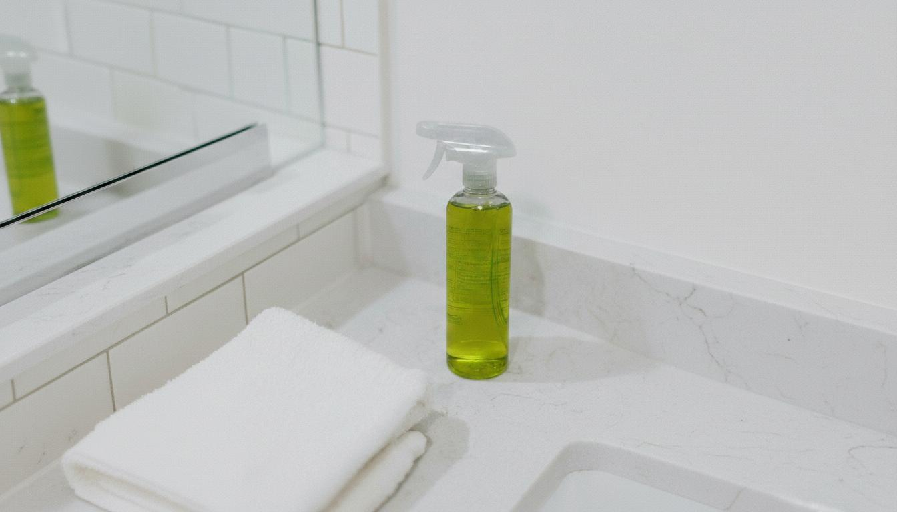
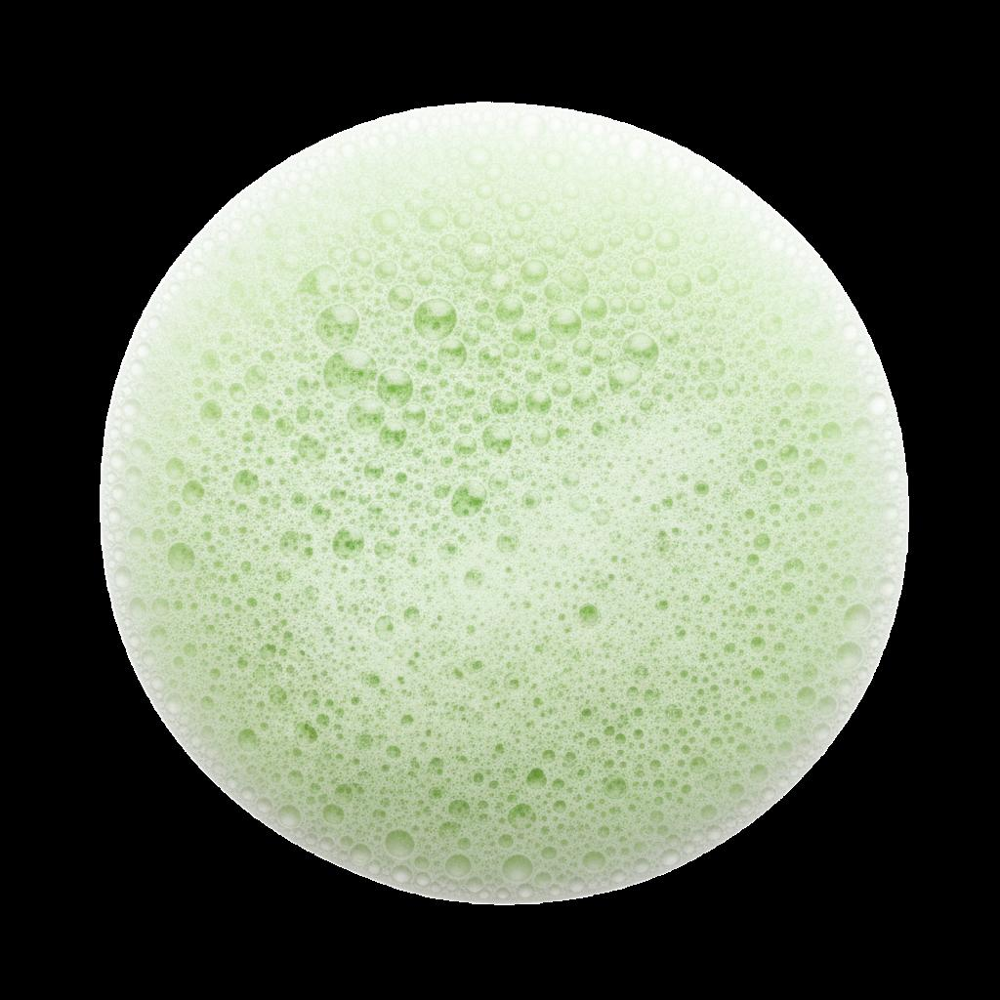
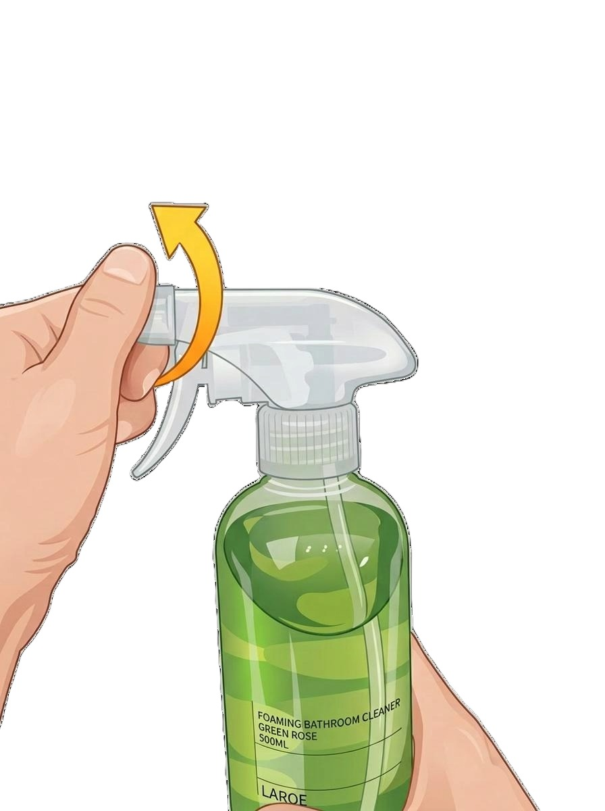

LAROE Multipurpose Cleaner
라로에 욕실 클리너는 이렇게 다릅니다
환기가 어려운 욕실에서도 부담 없이 사용할 수 있는 제품
데일리 욕실 관리에 적합한 클리너
The Question
락스 특유의 강한 냄새 없이
향이 좋은 욕실 클리너
미스트 타입이 아닌,
거품형
욕실 클리너
분사 후 물로 헹궈주기만 하면 되는
간편한 사용
원하지 않는 곳까지 퍼지지 않아 오염 부위에 집중 세정이
가능합니다.
(미스트 타입 사용 시 원하지 않는 곳까지 분사되어 불편함을 느끼셨던 경우에 잘 맞습니다)
Recommended For
욕실 전용 클리너를 찾고 있어요.
청소 후 남는 독한 세제 냄새 대신 향긋함을 원해요.
거품형 클리너를 선호해요.
성분이 너무 강한 제품은 피하고 싶어요.
식물 유래 성분 제품으로 청소하고 싶어요.
코코-글루코사이드 15,000mg/kg (15,000 ppm) 함유로, 코코넛에서 추출한 식물성 계면활성제입니다.
욕실 공간의 냄새와 물때를 함께 관리하고 싶은 분

Point 01 — Ingredients
욕실 오염에 맞춘 다중 세정 설계
코코-글루코사이드 15,000mg/kg (15,000 ppm), 코코넛에서 추출한 식물성 계면활성제로
자극은 낮추고 세정력은 강화
베이킹소다보다 강력한 세정력의 탄산나트륨 배합. 욕실 오염을
효과적으로 분해하는
알칼리성 세정 성분
정제수, 코코-글루코사이드, N,N-다이메틸도데실아민 N-옥사이드, 소듐라우레스설페이트,
탄산 나트륨, 다이프로필렌글라이콜, 벤조산 나트륨, 청색1호, 황색4호, 향료
Point 02 — Fragrance
시그니처 향 - Green Rose Blossom
그린 로즈 블라썸 향은 강하지 않게, 욕실 공간에 은은하게 퍼집니다.
청소 후에도 부담 없이 사용할 수 있도록 설계했습니다.
욕실의 악취를 잡고 싱그러운 그린 로즈 향만 가득히
남깁니다.
Point 03 — Foaming
환기가 어려운 욕실 환경을 고려하여 개발
코코넛 유래 계면활성제(코코글루코사이드)를 사용한
부드러운 세정력
고밀도 흡착형 거품이 오염 부위에 오래 머물러
물때와 얼룩을 효과적으로 세정
액체나 미스트처럼 흐르거나 흩날리지 않아
원하는 부위만 집중적으로 청소 가능

How to use
사각지대까지 꼼꼼한 세정
세정이 필요한 욕실 표면에 적당량을 분사해 주세요.
잠시 후 물로 충분히 헹궈 마무리해 주세요.
※ 피부에 직접 사용하는 제품이 아니며, 사용 후에는 물로 충분히 헹궈주세요.
Where to use
묵은 때와 얼룩을 간편하게 관리하세요

노즐을 화살표 방향으로 돌려 ON 상태로 맞춘 후 사용하세요.
본 제품의 분사 트리거 앞쪽에는 회전 가능한 노즐이 장착되어 있습니다. 사용 전 방향을 꼭 확인해 주세요.
노즐 상단에 'OFF' 표시가 보일 때는 분사가 되지 않도록 잠겨 있습니다. 반드시 사용 전 노즐을 회전시켜 주세요.
노즐을 돌려 'ON' 표시가 상단에 위치하게 하면, 분사되는 모드로 전환됩니다. 이 상태에서 트리거를 당겨 사용하세요.
Disclosure
| 품목 | 세정제 |
| 제품명 | 라로에 다목적 욕실 클리너 거품형 그린로즈향 |
| 용도 | 일반용(오븐용, 렌지후드용, 욕실용, 변기용, 카페트용, 세탁조용, 배수관용, 건물 바닥용, 기타표면세정용(거울용, 싱크대용, 가스레인지용, 타일용, 인덕션용, 전자레인지용)) |
| 제형 | 분무기형 |
| 액성 | 원액(약알칼리성) |
| 용량 | 500mL |
| 제조연월 | 별도표기 |
| 유통기한 | 제조일로부터 24개월 |
| 신고번호 | CB24-01-0034 |
| 제조국 | 대한민국 |
| 제조자 주소 연락처 | 주식회사 제이엔케이코스 / 경상북도 칠곡군 약목면 복성20길 72-8, 에이동 / 070-4757-8399 |
| 판매자 주소 연락처 | 라로에 laroe / 경기도 의왕시 백운호수로5길 15, 1층상가 104호(학의동) / 070-8287-2006 |
| 표준사용량 | 해당없음 |
사용 물질 및 성분명
| 주요물질 | N,N-다이메틸도데실아민 N-옥사이드, 정제수, 코코-글루코사이드 |
| 보존제 | 벤조산 나트륨 |
| 알레르기물질 | 리날로올, 리모넨, 헥실신남알 |
| 계면활성제 | N,N-다이메틸도데실아민 N-옥사이드(양쪽성 이온계), 소듐라우레스설페이트(음이온계), 코코-글루코사이드(비이온계) |
사용방법
사용상 주의사항
응급처치